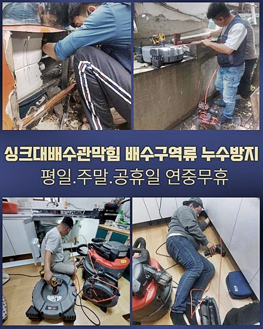
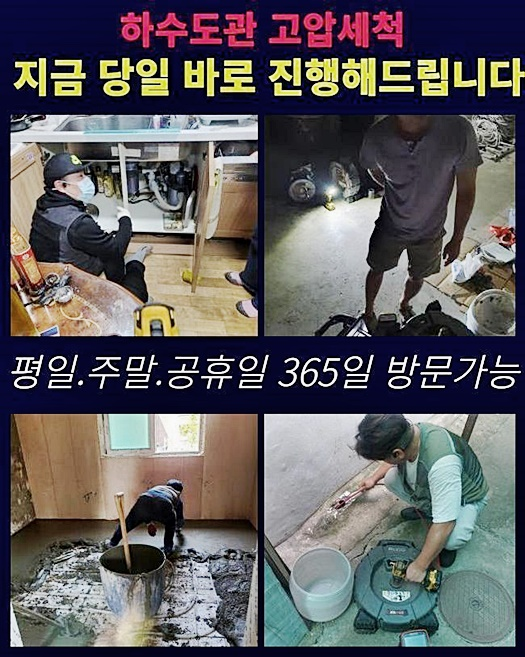
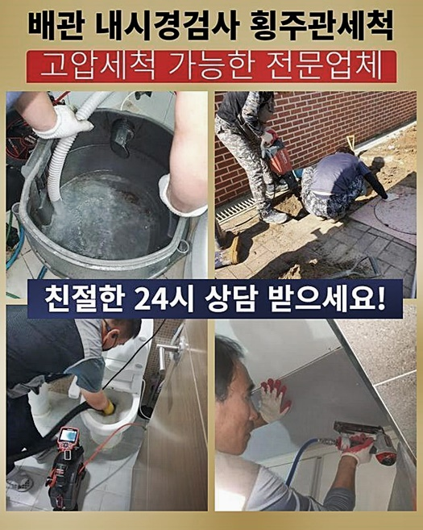
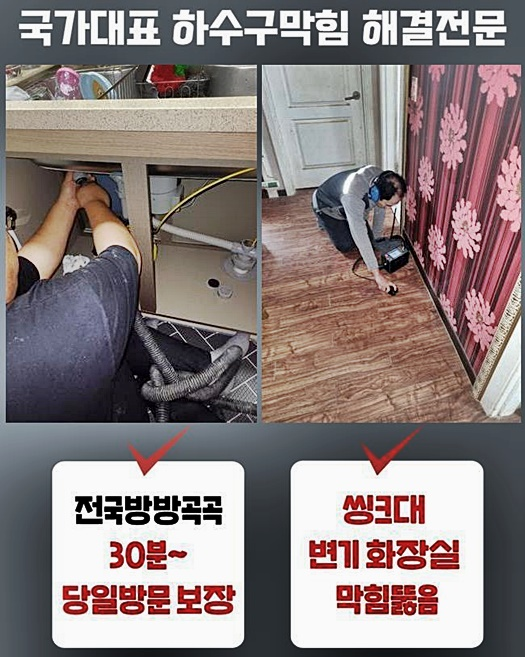
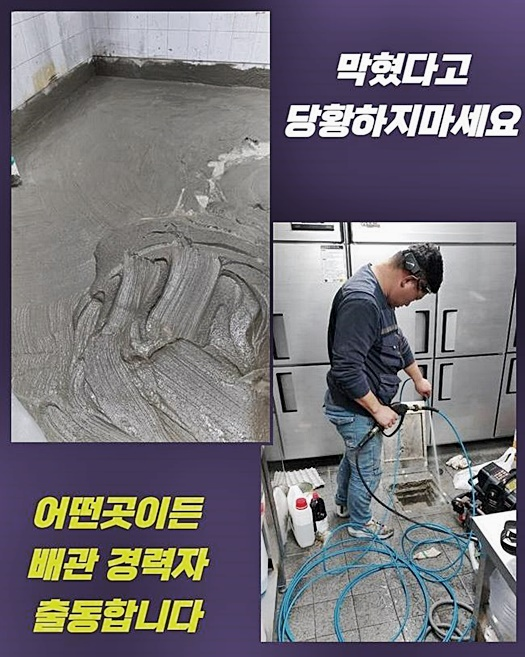
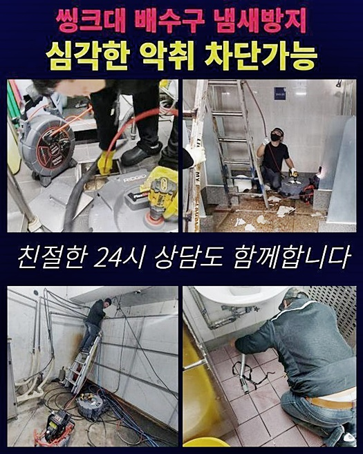

🏠 남동구 남촌동씽크대뚫음 장수서창동 하수구청소장비 설비업체
용인 남동 싱크대막힘 전문 시공 후기

📋 작업 개요
- 위치: 용인 남동, 남동, 용인
- 서비스 유형: 싱크대막힘, 변기막힘, 하수구막힘, 배관막힘, 맨홀막힘, 누수수리, 역류해결, 뚫는업체, 배관청소, 고압세척, 설비공사, 배관보수, 악취차단
- 작업 일시: 2024. 7. 8. 19:45
- 업체명: 하수구수사대 (010-5615-2118)
🔍 문제 상황
남동구 남촌동씽크대뚫음 장수서창동 하수구청소장비 설비업체
반갑습니다 하수도 정비는 간소하게 뚫기만 한다고 해소가 되지 않습니다
예측과 달리 까다롭고 성가신 상황이 많아 어떤 사유로 막힘이 일어난건지 이유를 명확히 검진하고 그에 적합한 방책을 그려 공사하는 게 먼저적으로적으로 과제입니다
간단하게 가지배관 클리닝을 진행하였어도 타 지점에서 막히는 바람에 얼마 지나지 않아서 전문가를 찾아야 하기도 하죠
따라서 현재의 고장만 해결하는 것에서 만족할 것이 아니라 타 지점도 전반적으로 검진하여 내부에 체류하는 찌꺼기들을 없애야 추가 문제가 발발하지 않는 것입니다
말할 것도 없이 세대원들 역시 청결유지에 노력을 기울여야 하고요
소개해 드릴 곳은 일반주택으로 저희팀의 후기글을 읽어 보시고 누수 증세를 처치하고자 요망하셨기에 출장하게 되었죠
배관막힘과 누수랑 어떠한 상관이 있느냐 궁금할 수 있겠으나 이번 현장 수리를 본다면 연관성이 많다는 것을 파악하실 수 있을 겁니다
2층부터 상층까지는 일반주택인데 최하층은 커피숍 등이 자리잡은 자주 목격할 수 있는 건축물이었습니다
맨홀 뚜껑을 열면 오수 및 배수 파이프가 자리잡고 있는데 주요 관이 차단되면서 역류가 일어났고 기어이 옆라인의 주택으로 전파되었기 때문에 빠른 조치가 필요했죠
요즘 보면 1층 위치엔 일반 매장이 들어가 있으며 2층 이상부턴 주거 형태로 형성되어 있는 걸 자주 볼 수 있는데 보는 것과 같이 관리미비로 인하여 고장나는 일이 많아요

🔎 원인 분석
💡 전문가 진단: 정밀 진단 장비를 사용하여 슬러지의 고착 여부를 판명하고 타격/세척 작업을 실시했습니다.
물이 넘쳐버리는 바람에 환경이 매우 더러워져 있었고 고치기 위해서 신속히 수리에 들어갔답니다
일단 막힌 이물질을 제거하기 위해 오수탱크와 주요 배관을 파악하였고 1층부터 꼭대기까지 거주 중인 구성원들의 처소 안으로 진입하여 배수관 이상여부를 전체적으로 진단했더니 특별한 트러블은 없었어요
그렇긴 하여도 주거하시거나 상가 운영자들에게 면죄부가 주어지는 것은 아니에요
평상시에 무분별하게 쓰레기를 버린 행동이 건물 안이 아니라 바깥의 처소에서 역류증상이 발발하였던 거죠
그러면 물샘이 생겨나는 까닭은 어떤 것일지요 그것은 바로 침전물입니다
당연히 파이프가 부식되면서 균열을 일으키기도 하지만 보는 바와 같이 찌꺼기들이 누증되며 하수관이 늘어났다 줄어들었다 하여 파이프가 물러지게 되고 몇 달 뒤엔 파열이 일어날 수 있어요
최근 들어서 혼자서 거주하시는 분들이 많아 원룸 건물 등에 주거하는 개인들이 많죠
몇 달 뒤엔 이와 같은 일로 시련을 겪으시는 건물주케이스가 무수한데요
그게 어떠한 상관이 있느냐 물어보실 수도 있으나 홀로 거주하는 경우에 세심하게 제반시설을 이용하는 사람들도 존재하나 책임감없이 생활하시는 사람도 상당합니다
물에 녹지 않는 여러가지 물건들을 배수 파이프로 투척하거나 변기 안으로 물휴지 등을 던져버리는 상황이 증가하고 있어요
그래서 장애가 이전과 비교하여서 커지고 있어요
아파트 역시 막힌다는 점에서는 매한가지지만 거주자들이 다수이며 관리사무소가 있어 위의 상황에서 이야기한 내용이 잦게 나타나지는 않아요

🔧 작업 과정
일단 맨홀을 열어서 안의 이물질들을 소멸시켰습니다
고압세정 업무를 시행하려 작업차를 최대한도로 근접한 위치로 옮겨 세척하기 위한 기기들을 안쪽으로 집어넣어 찌꺼기를 처리했습니다
물청소는 90도에 가까운 수돗물을 쓰고 수압을 올려서 그것이 에너지로 작용해 내측의 노폐물들을 소멸시키는 거죠
이때 고장이 발발한 지점처럼 다른 부분에서 막힘이나 물샘 등이 일어나게 되면 적절하게 쓰는 방책이랍니다
작업에 쓰이는 고온 액체는 저희 살수차 내부에서 보급되므로 별도 준비에 대한 우려는 안 하셔도 됩니다
수차례 작업하며 최종적으로 막힌 기름기와 차단을 발생시킨 메인 이슈였던 보습 휴지를 모두다 끄집어냈답니다
보습티슈 같은 것들은 일반적인 티슈와 다르게 불용성이고 미세플라스틱류 등을 넣어 제작된 것이기 때문에 양변기 안에 투입하면 문제가 생기므로 꼭 쓰레기통에 분리하여 처분해야 해요
그렇게 안 하신다면 차후 트러블이 증대되고 막힘으로 결국 배관 파열이 생기거나 인접 주민들에게도 타격을 끼치게 되는거죠
이런 문제들로 인해 지자체에서는 매번 청소 시기를 결정하고 전문업자를 수소문해 크고 작은 파이프 내부에 상존하는 침전물을 청소하는 시공을 속행하고 있어요
보는 바와 같이 하수도 오염의 주 원인으로 작용하고 있으므로 무조건 쓰레기로 분리하여 생활하시길 부탁하며 아무생각 없이 그냥 내던져 버리게 된다면 단순하게 본인세대의 고장으로 종료되지 않고 욕실 하수구나 개수대가 역류되며 수습이 어려워 질 수 있어요
촬영 기기를 넣어 꼼꼼하게 점검하면서 남겨진 이물들이 존재하는지 확인합니다
예측대로 깔끔하게 처리되었답니다 의뢰인도 이 모습을 보셨고 앞으로 유지를 올바르게 하실 것을 부탁드렸답니다
가끔 고장난 부분이 또 말썽이라 하소연하시는 경우는 꼼꼼하게 배수관을 클리닝하지 않아서예요
지금처럼 정체가 발발했을 시 그쪽의 상태의 종료에만 힘쓸게 아닌 전체적인 청소를 이행하면 재차 막혀버리는 상황이 발생하지 않아요
마땅히 거주하시는 개인들도 올바르게 이용해야 하죠
추천해드리는 유지 방책으로 음식물 쓰레기가 최대한 배관으로 이동하지 않게끔 망을 설비할 수가 있습니다
일차적인 이야기로 들리실 수 있겠지만 요즘 수리한 지점에서는 이런 것들마저 방치하시는 문의자분도 있으셨어요
배관 구멍이 보인다고 마음대로 처분하면 시간이 지나서 해당 문제점이 생겨날 가능성이 있어요
타 지점에도 손해를 주었으니 깨끗하게 정돈하였습니다


✅ 작업 완료
본 시공이 중요한 것은 당연하지만 추후 수습도 중대하다는 걸 강조합니다
단순하게 막힘만 소멸시키는 것에서 끝나지 않으며 근방 정리도 동시에 실시하니 문의 주시면 민첩하게 원상태의 배관으로 고치겠습니다
저희들은 침전물의 유형이나 다른 고장 등에 얽매이지 않고 뚫음이 필요할 때 즉각 방문하여 조력해 드립니다
이에 어느 때라도 우리를 바라신다면 연락해 주십시오
파이프 안의 침전물은 간결하게 적층되는 것에서 마무리되지 않으며 악취를 유발하고 관자체를 약하게 하기에 지속적인 유지보수를 실시할 것을 권장하며 이게 어려우시다면 생활 가운데 문제가 발발하지 않게 생활하시길 바라요



⚠️ 베란다 누수 및 방수 관리 방법
- ✅ 비가 많이 올 때 창틀 주변이나 아래층 천장에 얼룩이 생기는지 정기적으로 확인해 보세요.
- ✅ 우수관 주변 실리콘 마감이 들뜨거나 깨진 틈새가 있는지 손상 여부를 수시로 체크하세요.
- ✅ 베란다 바닥 타일의 줄눈(메지)이 소실되면 그 틈으로 물이 침투하여 누수가 유발됩니다.
- ✅ 누수 의심 증상 발견 시 방치하면 아래층 손실이 커지므로 즉시 전문가의 진단을 받으십시오.
💡 핵심 정리
- 확실한 장비 작업(내시경 점검 및 샤프트 스케일링)으로 원인을 뿌리 뽑습니다.
- 작업 후 1년 이내에 동일한 부위 재발 시 100% 무상 A/S 서비스를 보장합니다.
- 서울 · 경기 · 인천 전 지역에 24시간 언제든 긴급 출동할 수 있도록 항시 대기 중입니다.
❓ 자주 묻는 질문 (FAQ)
🚨 용인 남동 싱크대막힘 문제로 고민이신가요?
정확한 원인 진단과 확실한 시공으로 재발 없는 해결을 약속드립니다.
24시간 긴급 출동 | 서울 · 경기 · 인천 전지역 | 1년 내 재발 시 무상 A/S